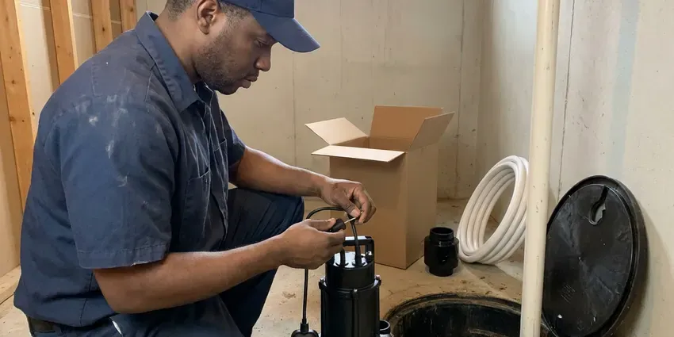
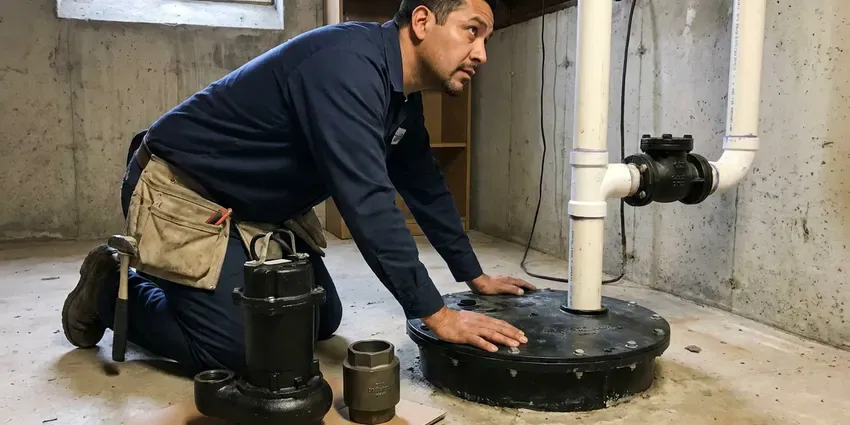

Water Heater Expansion Tank Installation in Monroe, LA
Dripping relief valve or banging pipes in Monroe, LA? A correctly sized expansion tank often fixes the problem in under two hours.
- Same-Day Installation Available
- Potable-Rated Tanks
- Prompt Local Service
- Same-Day Installs
Relief Valve Dripping in Monroe, LA?
A small expansion tank can add years to your water heater and stop that relief valve from dripping.
Water Heater Expansion Tank Installation in Monroe, LA
Every home in Monroe, LA gets the same process from us. First we measure static pressure, then pick the tank, size it to your heater, set the precharge to match, and mount it to local code so the system holds steady through a full heating cycle. It usually takes an hour or two.
Work we handle every week:
- Protecting heaters from thermal expansion
- Tank sizing by heater gallons, pressure and temperature
- Expansion tank sizing and installation

Additional Plumbing Installation Services in Monroe, LA
We install water heaters, pumps, lines, and fixtures across Monroe, LA with careful, permitted work that passes inspection the first time.


Monroe sump pump installation specialists


Customers
Why Choose Beau's Plumbing for Water Heater Expansion Tank Installation in Monroe, LA?
Code compliance is only part of the reason. The bigger reason is protecting your pipes and heater, since constant pressure swings wear out components faster than age alone, and a correctly charged tank evens those swings out every single cycle. It works quietly.
- Measured Pressure, We test static pressure and match the air charge to it.
- Water Heater Lifespan, Smoothing out pressure swings keeps welds and fittings from wearing early.
- Extended Lifespan, Fewer pressure spikes add years to the heater.
Citywide Coverage
Townhomes, condos and light commercial buildings across Monroe get the same service as single-family homes. We size for the heater and the building, and for shared mechanical rooms we coordinate access with the property manager so nobody waits around. Scheduling is flexible.
Experienced Team
Licensed and trained on current Louisiana plumbing codes, our team has installed hundreds of expansion tanks. Sizing charts are second nature to them, and they know which tanks hold their charge and which ones go waterlogged in a couple of years. Some brands last longer.
Safety-First Approach
Careful installation prevents the hazards that come with high pressure. We check every connection for leaks under full pressure, and we confirm the relief valve still works, because the expansion tank lowers pressure but the T and P valve is still the last line of defense. Both have to work.
Trusted Certified Monroe Plumbing Services Professionals
At Beau's Plumbing, we are proud to offer certified plumbing services throughout Monroe, LA. Credentials matter in this trade. Our plumbers hold recognized industry credentials, and they follow strict safety and quality rules on every repair, installation and maintenance call we run.
Call Us Now PHCC Plumbing Contractor Recognition
PHCC Plumbing Contractor Recognition Better Business Bureau (BBB) Accreditation
Better Business Bureau (BBB) Accreditation Angi Certified Pro
Angi Certified Pro ISO 9001 Quality Management Certification
ISO 9001 Quality Management CertificationThe Expansion Tank Work We Do in Monroe, LA
Commercial Expansion Tank Installation in Monroe, LA
Restaurants and laundromats run big water heaters hard all day. We install commercial-grade tanks sized for the volume, follow commercial plumbing code on support and placement, and work around your hours so the kitchen or the machines in Monroe, LA keep running. Heavy tanks get floor stands.

Amtrol Expansion Tank Services in Monroe
Amtrol's Therm-X-Trol tanks use a butyl diaphragm inside a steel shell with a lined water chamber. The model gets matched to your heater size and pressure, mount it on the cold supply, and set the precharge before water goes into the tank, since you cannot adjust the air side properly once the system is full in Monroe. Charge first, then fill.
Commercial and Multi-Unit Expansion Tanks in Monroe
Apartment buildings and offices with several heaters need tanks sized for the whole hot water system. Storage tanks and recirc loops get counted in the sizing, floor-mount the larger tanks with proper supports, and plan the work to keep hot water interruptions short for tenants in Monroe, LA. We can come after hours.
Standard Water Heater Expansion Tank Installation in Monroe
Most tank-style water heaters on a closed system need an expansion tank on the cold supply. We tee it into the cold line a few feet from the heater, precharge the air side to your measured house pressure, and strap it to the wall so the weight never hangs on the pipe in your Monroe home. We watch the gauge through one heat cycle.
Tankless Water Heater Expansion Tank Integration in Monroe, LA
Tankless heaters hold only a gallon or so, so thermal expansion is usually small. A recirculation pump or a buffer tank changes that, and some codes in Monroe, LA still call for an expansion tank on any closed system, so we check your setup and the local rule before recommending one. Sometimes the answer is no.
Brands and Quality Products in Monroe, LA
Potable-rated tanks are the only kind we install on drinking water. Watts, Amtrol and Z-Flex all make good ones, with liners that keep water off bare steel and diaphragms rated for drinking water, which matters because a hydronic heating tank looks similar but is not approved for your supply in Monroe, LA. Check the label for potable approval.
Tank Sizing and Placement in Monroe
Sizing comes down to heater volume, supply pressure and water temperature. Those go into the manufacturer chart, then mount the tank on the cold inlet near the heater, in a spot you can reach later, because the precharge needs checking and the tank will eventually need replacing in your Monroe home. Access saves money later.

Expansion Tank Installation Cost Comparison in Monroe, LA
Adding the tank during a water heater replacement is the cheapest time to do it. With the water off and the pipes open, it is a small add, while a standalone install costs a bit more in labor, and attic work, a larger tank or a new PRV push the total higher in Monroe. Pricing comes first.
Expansion Tank Installers Near You in Monroe, LA
Protecting your plumbing does not have to wait. A local plumber can usually come out within a day or two, measure your pressure and tell you whether thermal expansion is the cause of the drip in Monroe. The test takes minutes.
Expansion tank work near you in Monroe, LA comes from a local crew. Response times stay short across the area, and since most installs take an hour or two, we can often fit yours in the same day you call, especially if the relief valve is already dripping. Dripping valves get priority.
Beau's Plumbing at a Glance
- Licensed and insured plumbers serving Monroe, LA
- 24/7 emergency service with same-day scheduling
- Upfront, flat-rate pricing before work begins
- 4.8-star rated by 578+ Louisiana customers
Monroe Map
Monroe Information
- Population
- 46,616
- Area codes
- 318/343/903
- Service area
- Monroe and communities within 40 miles
- Nearby
- Alexandria, Bossier City, Shreveport, Baton Rouge
Homes in Monroe, LA with a PRV or a meter check valve have closed systems, and a water heater expansion tank keeps thermal expansion from overpressurizing them.
Expert Services
Call Beau's Plumbing for reliable plumbing work done by licensed pros in Monroe, LA.
Our Specialized Plumbing Services in Monroe, LA
At Beau's Plumbing, we handle the full list of plumbing services across Monroe, LA. We go from leak detection all the way to full system installations, for homes and commercial buildings, and we do it quickly at a fair price. Take a look at our core services below:


How Our Water Heater Expansion Tank Installation Works in Monroe, LA
Here is how we take care of your expansion tank from the first call to the final pressure check.
Request a Quote
Call (504) 317-6869 and tell us about your water heater and any symptoms like a dripping relief valve. We give you an honest price.
Test and Size
We measure static pressure, check the PRV and relief valve, and pick the tank. The air charge is set to match your pressure.
Install and Verify
We install and support the tank on the cold supply, then run the heater through a cycle. Pressure has to stay steady.
Frequently Asked Questions About Water Heater Expansion Tank Installation in Monroe
Residential expansion tank installs usually cost $250 to $550 with the tank and labor. Attic installs, larger tanks or a new PRV can bring it to $600 to $1,000.
About one to two hours for a typical install. That covers the pressure test, the install and a heating cycle check, and we keep the water off for as little of that as possible, usually under an hour. Attics can take longer.
Water expands when it heats, and on a closed system that extra volume raises the pressure in every pipe. Without a tank, the pressure spikes every heating cycle, which wears out the heater, the fixtures and the relief valve in Monroe. Louisiana has a statewide plumbing code built on a national model code, and local building departments handle permits and inspections. Local codes often require a tank too.
Most standard installs finish in one to two hours. Major pipe changes take a bit longer, especially if the cold supply needs rerouting to make room for the tee, and we keep the disruption to your hot water as short as we can. Hot water is back the same day.
Probably, if your home has a PRV, a check valve or a backflow preventer on the main. Any of those makes a closed system that needs one, and plenty of local codes require it whenever a water heater is installed.
A handy homeowner can do it, but the tank has to be sized, precharged to your exact pressure and properly supported. Mistakes lead to early failure or leaks, so most people have a plumber do it.
One to two hours for most installs. Attic work or a PRV replacement can add an hour or two.
Water spitting from the air valve is the clearest sign. Other clues are rust on the tank, banging pipes or pressure that swings, since all of those show up when the tank stops absorbing expansion and pressure starts climbing again. A tap test helps confirm it.
What People Are Saying About Our Plumbing Experts?

Megan L.
Our upstairs tub drained so slowly that every shower turned into a bath. Beau's Plumbing pulled a wad of hair out of the stopper and then snaked the line past the trap. Three months later it still drains fast.
Drain Cleaning · Baton Rouge, LA
Diane F.
My kitchen faucet had dripped for months and I finally got tired of hearing it at night. Beau's Plumbing came out the next morning, replaced the cartridge and the O rings, and tightened a loose base that was letting water under the sink.
Faucet Repair · Monroe, LARachel N.
Hard water was leaving white crust on every faucet and our dishwasher was struggling. The tech tested the water, recommended a softener sized for a family of five, and installed it with a bypass valve in one afternoon. The spots on our glasses are gone.
Water Softener · Monroe, LA
Jessica T.
We were adding a gas range in a kitchen remodel and needed a new line run from the meter. The plumber pulled the permit, ran the pipe through the crawl space, and had it inspected and approved within the week.
Gas Line Repair · Shreveport, LAAngela D.
Our sump pump quit during a storm and the water was an inch from the basement carpet. Beau's Plumbing put in a new pump with a battery backup that same evening. We have had two heavy rains since. It kicked on both times.
Sump Pump · Baton Rouge, LA
Kevin O.
Before buying our house I paid for a sewer camera inspection. Beau's Plumbing found a belly in the line that held standing water about forty feet from the cleanout. We used the video to get the sellers to fix it before closing.
Sewer Camera Inspection · Baton Rouge, LA